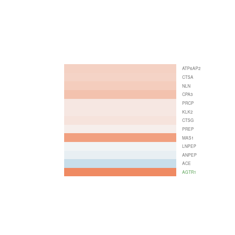
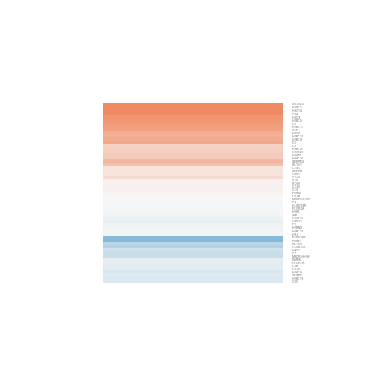
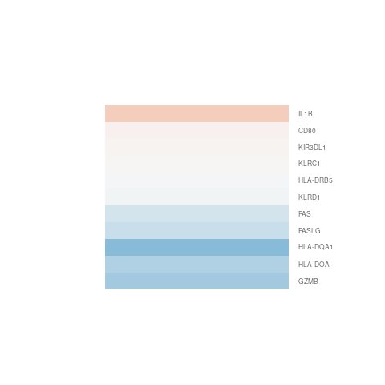
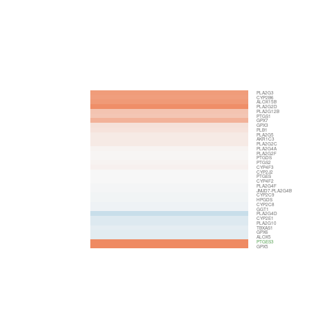
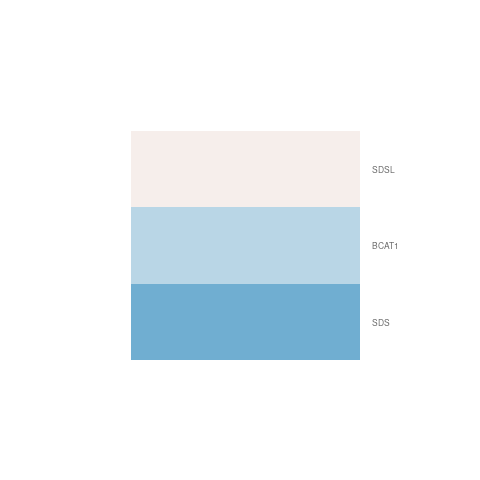
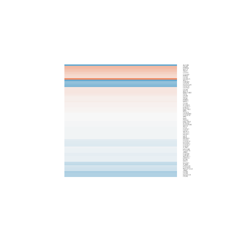
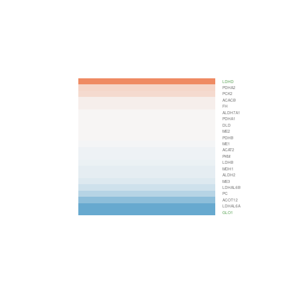
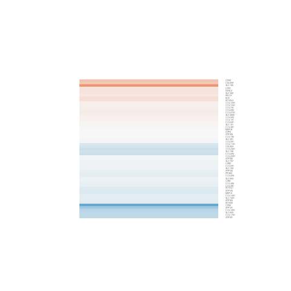
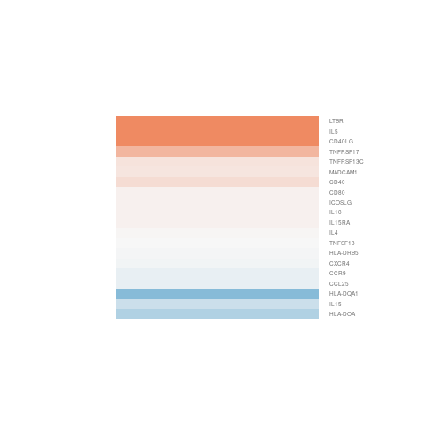
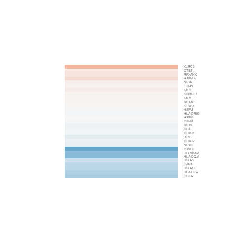

|  hsa04614 Renin-angiotensin system Large Map Interpret Results |  hsa05322 Systemic lupus erythematosus Large Map Interpret Results |  hsa05332 Graft-versus-host disease Large Map Interpret Results |  hsa00590 Arachidonic acid metabolism Large Map Interpret Results |  hsa00290 Valine, leucine and isoleucine Large Map Interpret Results |
|  hsa04514 Cell adhesion molecules (CAMs) Large Map Interpret Results |  hsa00620 Pyruvate metabolism Large Map Interpret Results |  hsa04974 Protein digestion and absorpti Large Map Interpret Results |  hsa04672 Intestinal immune network for Large Map Interpret Results |  hsa04612 Antigen processing and present Large Map Interpret Results |